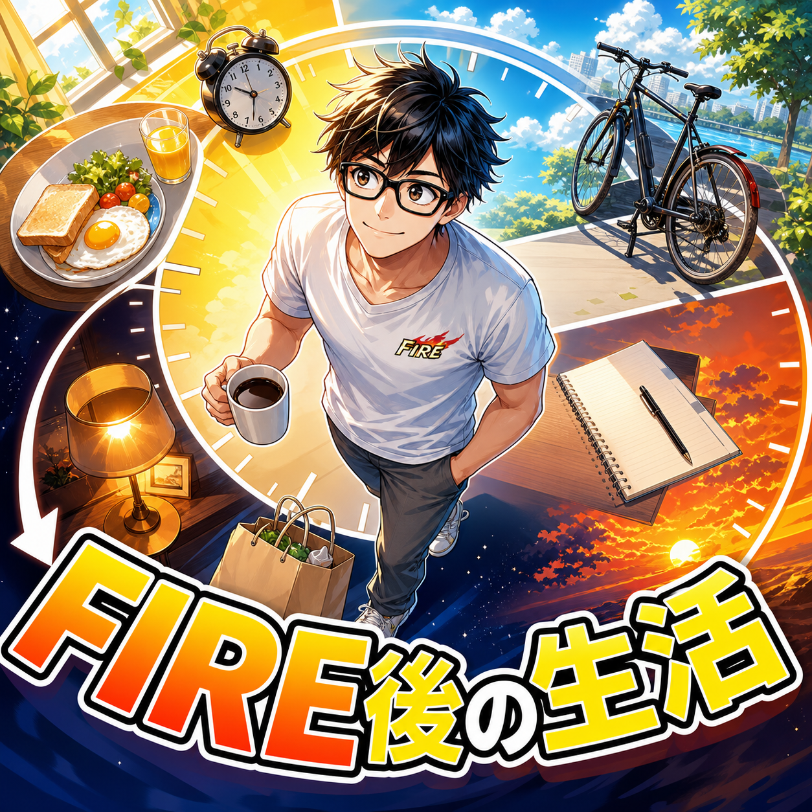

FIRE COLUMN
FIRE後の生活はどう変わる？実際の1日と数年後の本音

.png) RELATED ARTICLE
サイドFIRE6年目の一日。自由な時間をどう使っているか
サイドFIRE6年目の一日を聞かれたら、朝から優雅に読書をして、昼はカフェで仕事をしていると答えたいところです。現実は、1歳の子どもに起こされ、保育園の準備をし、家事をし、発信をし、夕方にはお迎えに行きます。
wakuwaku-fire-git.pages.dev ↗
RELATED ARTICLE
サイドFIRE6年目の一日。自由な時間をどう使っているか
サイドFIRE6年目の一日を聞かれたら、朝から優雅に読書をして、昼はカフェで仕事をしていると答えたいところです。現実は、1歳の子どもに起こされ、保育園の準備をし、家事をし、発信をし、夕方にはお迎えに行きます。
wakuwaku-fire-git.pages.dev ↗
 COMMUNITY
FIREを本音で話せる場所
ワクワクFIRE道。FIREや自由な人生を目指す人が交流できるコミュニティ。
community.camp-fire.jp ↗
COMMUNITY
FIREを本音で話せる場所
ワクワクFIRE道。FIREや自由な人生を目指す人が交流できるコミュニティ。
community.camp-fire.jp ↗
FIRE後の生活は、南の島で毎日遊ぶようなものではありません。僕のある一日は、朝6時の子どもの準備から始まり、送迎、家事、創作、散歩、買い物、寝かしつけで終わります。FIRE直後との違いも含めて、普通の日のリアルを話します。
まいど！ワクワクFIREです。
FIRE後の生活って、どんなイメージがありますか。
朝はゆっくり起きて、好きな場所でコーヒーを飲み、昼から遊ぶ。たしかに、そういう日も作れます。でも、FIRE6年目の僕の現実は、朝6時ごろに子どもに起こされ、朝食と保育園の準備をして、送迎へ行くところから始まります。
そのあと家事をして、文章やYouTubeに向き合い、昼は外食、散歩やサイクリング。夕方はお迎え、買い物、夕食、寝かしつけ。キラキラした毎日ではありません。むしろ、めちゃくちゃ生活です。
それでも、会社に時間を渡していた頃とは違う。FIRE後の生活は、派手な消費よりも、普通の日を誰とどう過ごすかに価値が移っていきました。
FIRE後の生活は、毎日が休日になるだけではない
会社を辞めたら、毎日が休日になる。これは半分正しいです。仕事の予定はなくなるし、平日の昼間に自由に動ける。急な用事にも対応しやすい。
一方で、休日という言葉には「休むための平日以外」という意味もあります。平日がなくなれば、休日のありがたさも薄くなる。何もしない時間が増えるほど幸せになると思っていたのに、時間の境目がなくなって、何をしたか分からない日も出てきます。
僕はFIRE直後に、その洗礼を受けました。FIRE後の生活は、働かないことだけで完成しません。働いていた時間を、何に置き換えるのか。家族、創作、運動、遊び、休息。自分で一日の中身を選ぶ必要があります。
最初の頃は、自由を使い切れずにだらけた
退職直後は、ゲームをしたり、昼前まで寝たり、予定を朝起きてから決めたりしていました。「好きなときに寝て、好きなときに起きる！」という生活は、最初のうちは最高です。
でも、何日も続くと、体内時計も気持ちもズレてくる。やりたいことを始めるにも、まず生活を戻すところからになる。自由が増えたのに、自分で自分の生活を動かせない。これは、なかなか情けない感覚でした。
約2年半ほど、だらけた状態を経験して、僕は「時間さえあれば充実する」という考えを疑うようになりました。自由は材料であって、料理そのものではない。ここはFIREを目指す人にも、先に知っておいてほしいところです。
子どもが1歳の時期に公開した、ある一日の流れ
子どもが1歳の時期に、だいたいこんな感じという一日の例を公開しました。子どもの体調や予定で変わるので、誰にでも当てはまるスケジュールではありません。FIRE後の生活がどれくらい普通なのかを感じてもらうための記録です。
| 時間帯 | 過ごし方 |
|---|---|
| 6:00ごろ | 子どもに起こされる |
| 6:00〜8:20 | 子どもの食事、朝の準備、保育園準備 |
| 8:20〜8:35 | 保育園への送迎 |
| 8:35〜11:00 | 家事、文章やYouTubeなどのクリエイティブ活動 |
| 11:00〜12:00 | 外食 |
| 12:00〜14:00 | 散歩、サイクリング |
| 14:00〜17:20 | 家事、クリエイティブ活動 |
| 17:20〜20:30 | お迎え、買い物、夕食、寝かしつけ |
| 20:30〜24:00 | 妻との時間、動画、友人、ゲームなど |
こうして並べると、自由人というより、生活を回す人です。会社員ではないけれど、家庭の中には役割と締め切りがある。むしろ、FIREしたからこそ、その役割を自分で引き受けられる時間が増えました。
昼のラーメンと散歩が、意外と大きい
FIRE後の生活で「何が一番よかったですか」と聞かれたら、豪華な旅行だけを挙げることはありません。平日の昼にラーメンを食べに行ける。混んでいない時間に散歩できる。眠ければ少し休める。
こういう小さい自由が、毎日の手触りになります。働いている頃は、昼食も移動も、時間に追われて決めることが多かった。今は、家事や子どもの予定を見ながら、自分の体調に合わせて歩ける。
もちろん、外食も散歩も、それだけで人生が変わる魔法ではありません。でも、何気ない一日に自分の意思が残る。FIREの価値は、案外そこにあるんやと思います。
午後は家事とクリエイティブ活動を行ったり来たり
FIRE後にやりたいこととして、創作を挙げていました。けれど、現実には家事が終わるとすぐ創作、というほど綺麗には進みません。洗濯、片付け、買い物の確認をして、文章を書いて、また家のことをする。
この行ったり来たりが、今の生活です。家事を「何もしていない時間」と見ると、自分にがっかりする。でも、家族の生活を支える仕事でもあるし、その合間に書いた文章が誰かに届くこともある。
会社員時代のように、仕事だけが一日の成果ではありません。家事をした、子どもを迎えに行った、一本書いた、少し歩いた。成果の単位が小さくなったぶん、拾えるものが増えた感じがあります。
夜は家族、深夜には「まだ寝たくない」が出てくる
夕方からは、お迎え、買い物、夕食、寝かしつけ。ここはかなりバタバタします。FIREしているからといって、夕方の忙しさが消えるわけではありません。
子どもが寝たあとは、妻と話したり、動画を見たり、友人とやり取りしたり、ゲームをしたりします。そして24時を過ぎるあたりで、「まだ寝たくない」という気持ちが出てくる。
明日の朝に会社へ行く必要がないから、夜を終わらせる理由が弱いんです。これも自由の裏側やなと思います。朝の予定がある時期は、夜更かしの自由より、ちゃんと寝て翌日を楽にする自由のほうが大事になります。
数年たって変わった、FIREの価値
FIRE直後の僕は、自由を「自分が好きに使える時間」として見ていました。ゲームをしてもいい。昼まで寝てもいい。誰にも口出しされない。それがうれしかった。
数年たって家族ができた今は、自由の向きが少し変わっています。子どもの体調不良に対応できる。妻が働く時間を支えられる。家事をして、夕方のお迎えに行ける。自分の時間だけでなく、家族に余白を渡せることが、FIREの価値になりました。
だから、FIRE後の生活が地味になったから失敗、とは思いません。むしろ、派手さがない日でも「今日はこの人たちと過ごせた」と思えるなら、かなり豊かです。キラキラしていない日常も、自由の使い道なんよな。
FIRE後の生活を想像するときに、考えておきたいこと
- 予定のない火曜日を想像する。旅行や退職初日の高揚感ではなく、何もイベントがない日に何をするか考える。
- 家事や家族の役割を時間に入れる。自由時間として数えない時間にも、責任と価値がある。
- 一人の時間と人との時間を両方作る。孤立すると、自由が閉じこもりに変わることがある。
- 生活リズムを外部に借りる。送迎、約束、運動、創作など、自分を動かす杭をいくつか持つ。
FIRE前にやりたいことを100個書くより、普段の一日を一度細かく描いたほうが、僕は役に立つと思います。朝起きて、昼ご飯を食べて、夕方になって、夜に眠る。その間を誰と何で埋めるのか。
FIRE後の生活は、普通の日を選び直すこと
FIRE後の生活は、会社の予定から解放される代わりに、自分で生活の輪郭を作る日々です。最初はゲーム三昧でだらけた僕も、今は家事、子育て、創作、散歩、家族との時間を組み合わせています。
毎日が豪華である必要はありません。朝食を作る、送迎する、昼にラーメンを食べる、少し歩く、文章を書く。そんな普通の日を、自分たちで選べる。ほんまに地味やけど、僕がFIREしてよかったと思うのは、こういうところです。
FIREは人生上がりじゃない。仕事をやめた瞬間に答えが出るものでもない。生活の形が変わるたびに、自分と家族に合う一日を作り直していく。今の僕は、そんなFIRE後を過ごしています。